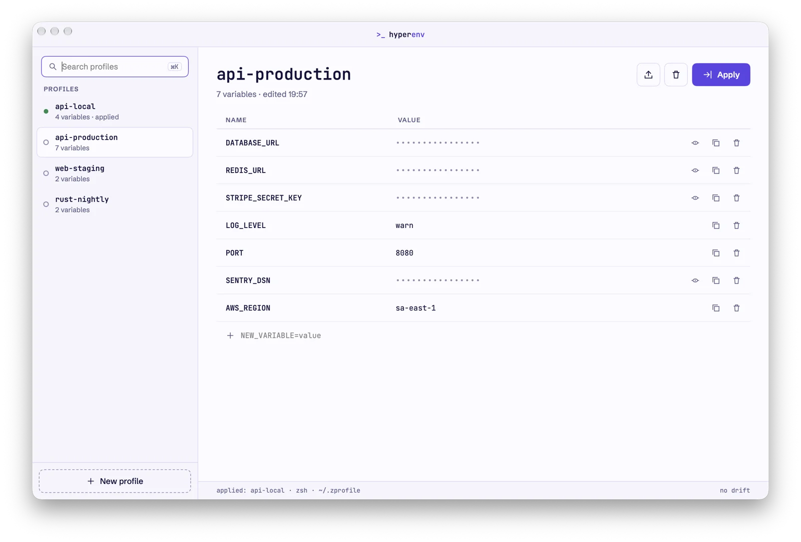
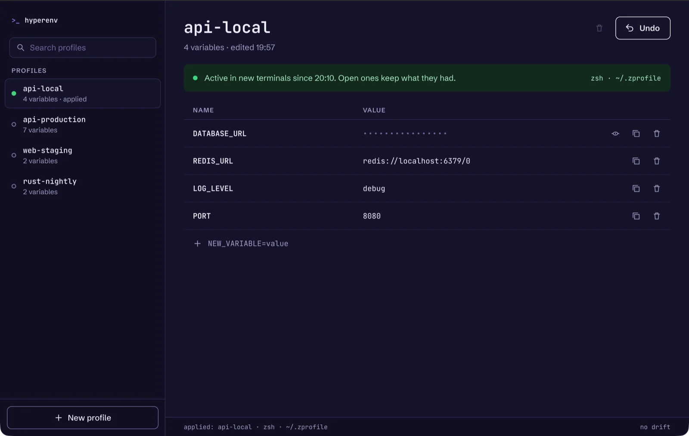
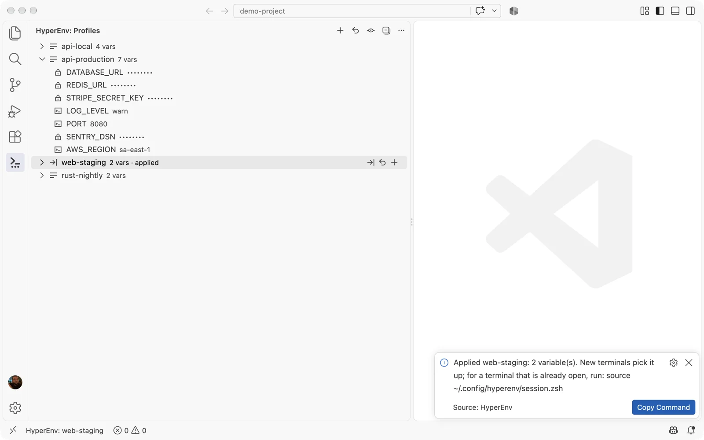
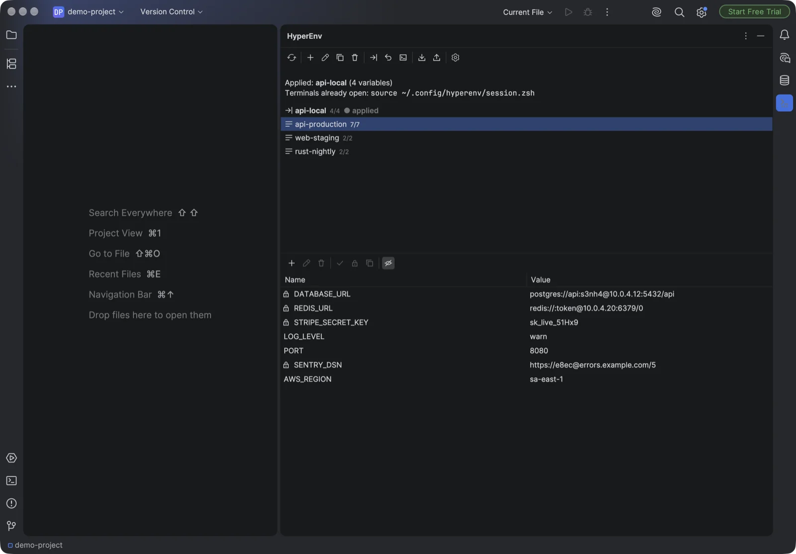

Profiles, applied in one click
A flat list of profiles — api-local, api-production, web-staging. Apply one and every new terminal gets it.
macOS · Windows · Linux · Open source, MIT
Your environment, in the right place.
Profiles of environment variables you apply in one click and undo just as fast. New terminals get the profile; your previous values come back when you undo.
2.0 · signed and notarized, MIT


A closer look
A flat list of profiles — api-local, api-production, web-staging. Apply one and every new terminal gets it.
Applying records what was there first, once. Undo restores those values exactly, including the ones that did not exist.
On macOS and Linux a guarded block in your startup file; on Windows your user environment in the registry. Nothing needs sudo.
The hyperenv command and the editor plugins drive the same core, store and journal as the apps — one writer, one state.
Download
Every download is checked against its published SHA-256. The scripts never use sudo, and you can read them before you run them.
curl -fsSL https://hyperenv.falcaosl.com/install.sh | bashInstalls the app with the hyperenv command inside it. Read the script.
irm https://hyperenv.falcaosl.com/install.ps1 | iexThe command installs hyperenv only; the button gets the app. Read the script.
curl -fsSL https://hyperenv.falcaosl.com/install-cli.sh | shThe command installs hyperenv into ~/.local/bin. Read the script.
In your editor
The plugins carry the hyperenv command with them, so they work on their own — and share state with the apps when both are installed.

